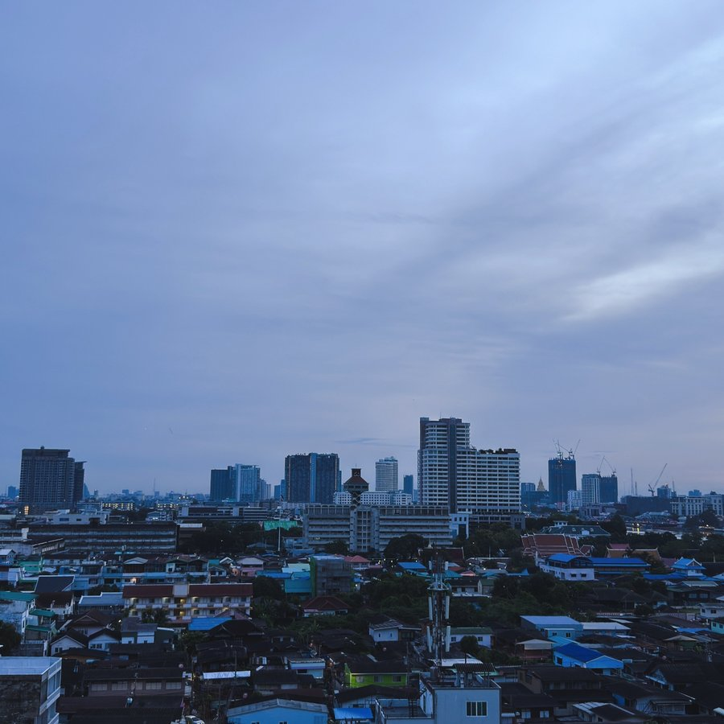
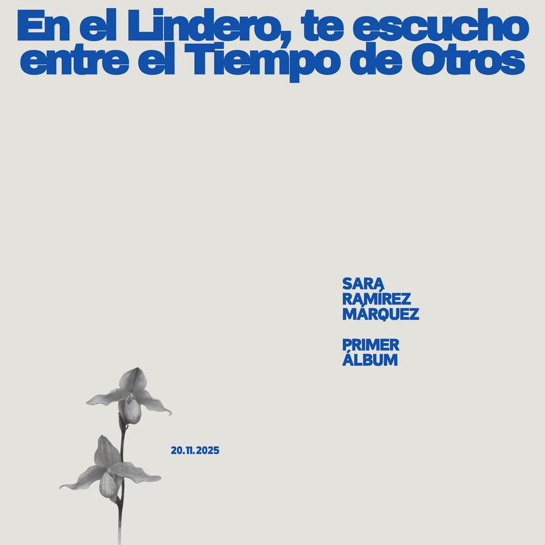

The City Below My Window — Apartment Recordings from Bangkok
2026

En el Lindero, te escucho entre el Tiempo de Otros
2025
Sara Ramírez Márquez, 2001
Composer from Bogotá. She studied Composition for Films and Media at UNIVERSIDAD DE LOS ANDES and Electroacoustic Composition at the UNIVERSITY OF BIRMINGHAM.
Her works have been performed internationally in the United Kingdom, France, Italy, Poland, Colombia, Argentina, and Thailand; and her original scores have featured in films officially selected for the BIRMINGHAM FILM FESTIVAL and the BOGOTÁ INTERNATIONAL FILM FESTIVAL.
Her interests revolve around immersive sound, environmental sound, and religious studies. Her current creative practice integrates electronic improvisation, poetry, spoken text, and multilingualism.
2026
Estreno nacional — El Juego de la Vida
Departamento de Música · Bogotá, Colombia
9.05.2026
Marginale II
Opificio Puca · Napoli, Italia
2026
FICCI — Festival Internacional de Cine de Cartagena
Cartagena, Colombia
17–19.04.2026
TagTEAMS Festival 2026
Bangkok, Thailand
One Last Evening in Kashihara — selected for the TEAms Room Program
3.03.2026
AM-Biwalencja 2026
Akademia Muzyczna im. Karola Szymanowskiego · Katowice, Poland
18.02.2026
RSU International Symposium of Electroacoustic Music
Rangsit University · Bangkok, Thailand
Premiere of Not the way to Manchester · Premiere of One Last Evening in Kashihara
28–29.01.2026
5.12.2025
62nd Festival di Nuova Consonanza
Mattatoio La Pelanda · Roma, Italia
Λίμνες Λήθης [ με αναμνήσεις ] — 16ch Ambisonic
20.11.2025
20.11.2025
Birmingham Film Festival
Millennium Point · Birmingham, United Kingdom
The Letters, dir. Oishi Datta
19–20.11.2025
Cartas a Copenhague
Teatro Libre Centro, La Calendaria · Bogotá, Colombia · 8:00pm
Beca de creación Bogotá Ciudad Escenario — Corta Trayectoria 2025
7.11.2025
25.10.2025
BEASTdome — afromerm & abi asisa + BEAST Composers
Bramall Music Building · Birmingham, United Kingdom · 19:30
Λίμνες Λήθης — Premiere
11.10.2025
Bogotá International Film Festival
Cinemateca de Bogotá, Sala Capital · 17:30
El Juego de la Vida, dir. Mario Andrés Ruiz Zuluaga — Estreno mundial
28.09.2025
Estreno en YouTube — Lumbalú (2023)
Bogotá, Colombia · 16:00–17:20 GMT-5
Radionovela — for Spanish speaking audience
26.09.2025
14.09.2025
PAYSAGES | COMPOSÉS 2025
Jardin des Plantes · Grenoble, France · 13:00–18:00
In the Wake of Seven Dawns — selected in the BINAURAL category
26.08.2025
Audio-Visual Performance
Chiang Mai University · Thailand
23.08.2025
Wonderland — PGVIM Symposium 2025
Princess Galyani Vadhana Institute of Music · Bangkok, Thailand
17.08.2025
The Sonic Art & Improvisation
PoA White Box, Yellow Lane · Bangkok, Thailand · 18:30–20:00
24.07.2025
SYNTHETIS — International Summer Course for Composers
Nowy Dom Sztuki · Radziejowice, Poland
Innerbloom — Krzysztof Gluńka, alto saxophone · Sara Ramírez Márquez, live electronics
1–3.05.2025
BEAST FEaST 2025
University of Birmingham · Birmingham, United Kingdom
In the Wake of Seven Dawns — Sound Installation
13.03.2025
mini-BEAST — Spring 2025
Dome Room, Bramall Music Building · Birmingham, United Kingdom · 11:30–12:30
11.12.2024
mini-BEAST — Autumn 2024
Dome Room, Bramall Music Building · Birmingham, United Kingdom · 11:30–12:30